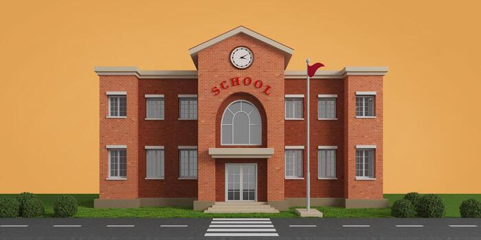
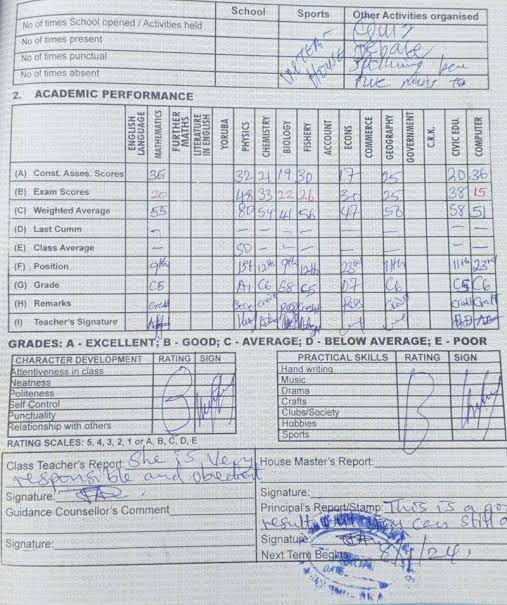
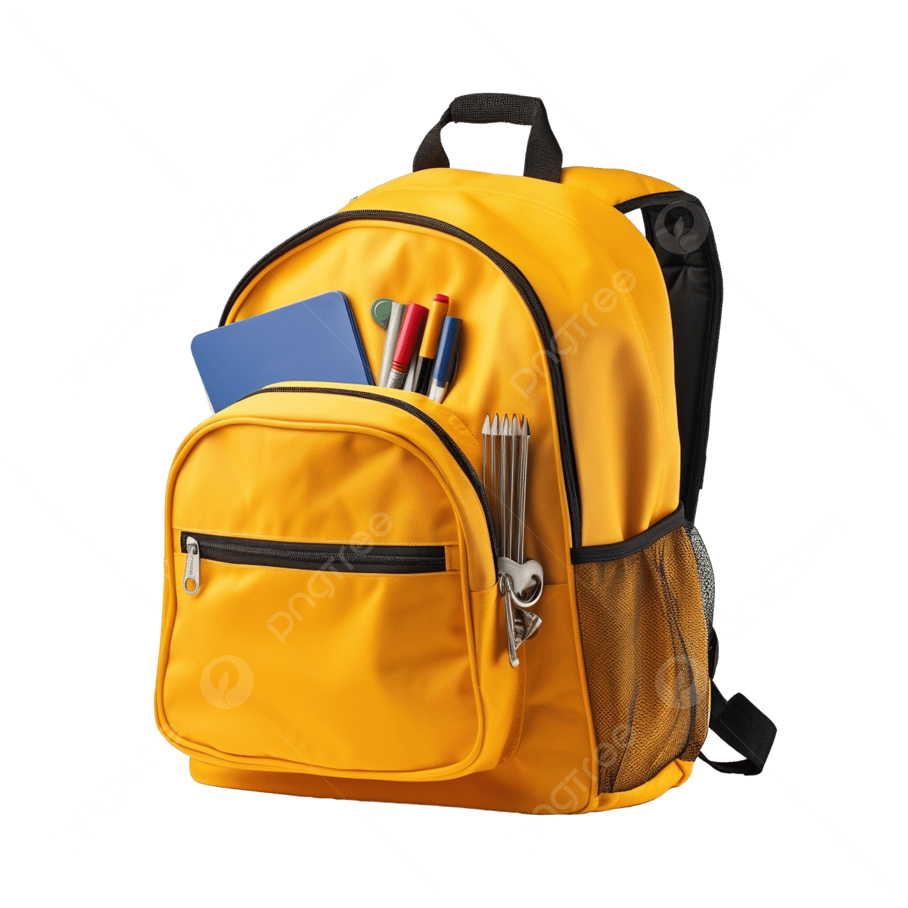

Understanding computer concepts using examples from everyday school life.
Sometimes new computer concepts may appear difficult. Personalized analogies help us connect new knowledge to experiences we already understand. In this lesson, Computer Hardware concepts will be explained using familiar examples from school and everyday life.

Imagine your school. The classrooms, desks, chairs, gates, whiteboards and buildings are things you can physically see and touch.
In the same way, Computer Hardware refers to all the physical parts of a computer that can be seen and touched.
Think about when a teacher gives an assignment. Students submit their answers through their notebooks.
The notebook becomes the means through which information enters the teacher. Similarly, Input Devices are used to enter information into a computer.

After marking assignments, a teacher returns the result to students.
This is information coming back to the learner. Output devices work similarly by presenting processed information from the computer to the user.

A school bag stores books and materials for future use. A cupboard stores items safely until they are needed.
Storage devices perform a similar role in a computer system by keeping information for future use.
Think of the school principal.
The principal coordinates activities, supervises operations and ensures that the school functions properly.
Likewise, the CPU processes instructions and controls the activities of the computer. This is why the CPU is often called the brain of the computer.
| Everyday Experience | Computer Concept |
|---|---|
| School Building | Computer Hardware |
| Submitting Assignment | Input Device |
| Teacher Returning Result | Output Device |
| School Bag | Storage Device |
| Principal | CPU |
Can you think of other examples in your daily life that are similar to computer hardware components? Relating new concepts to familiar experiences helps improve understanding and retention.